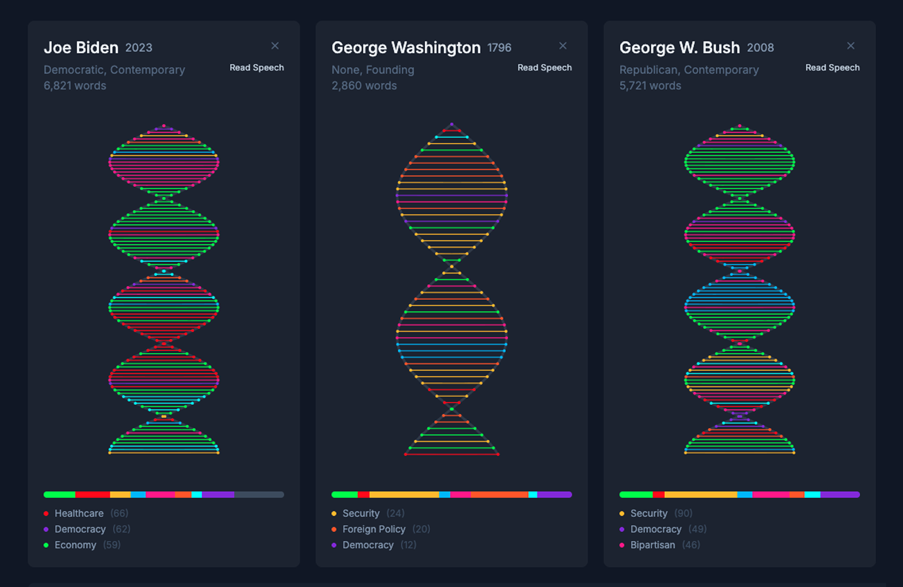

Digital Storytelling · Parsons MS Thesis
Louis Armstrong in Data and Song
In collaboration with The Louis Armstrong House Museum, this project explores Louis Armstrong's musical legacy through archival research, including his performances and recordings across decades.
Interactive Visualization • Public Installation
Banned Words
An interactive data visualization—both a physical public installation and web experience that makes visible the systematic scrubbing of language from federal agency websites.

GIS • Storytelling
Bangladesh Flooding
A spatial analysis of how birth patterns intersect with low-lying flood-risk zones across Bangladesh.

Interactive Visualization • AI
Silhouette Art of Early America
In collaboration with the Smithsonian Museum this is an AI-powered archive that brings 18th and 19th century silhouette portraits into the digital age.

Interactive Visualization
Presidential Speech DNA
An interactive visualization that compares presidential speeches to reveal how rhetoric and themes evolve across administrations.

Storytelling
Women & Climate Change
A visual story that translates climate research into a clear picture of how environmental change disproportionately affects women worldwide.

Exploration
Fake News
An interactive visualization that maps how misinformation spreads, clusters, and gains traction across digital media ecosystems.